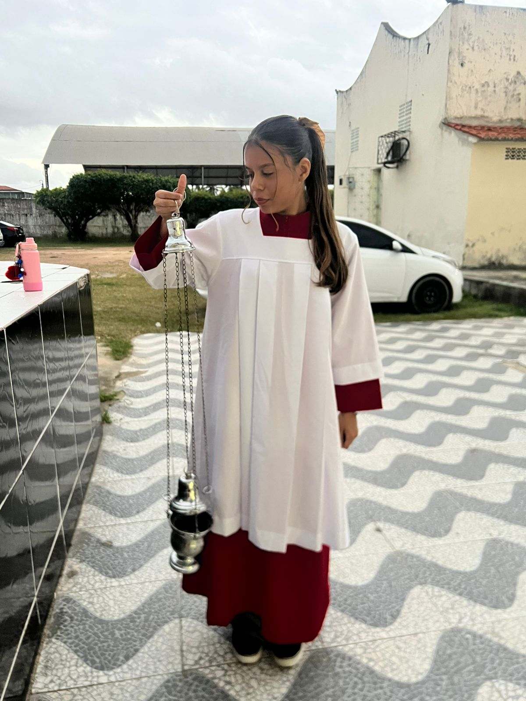
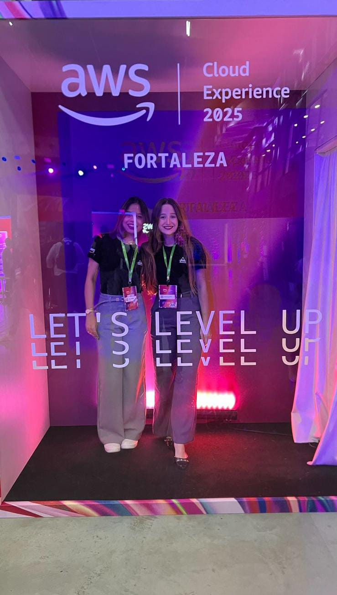
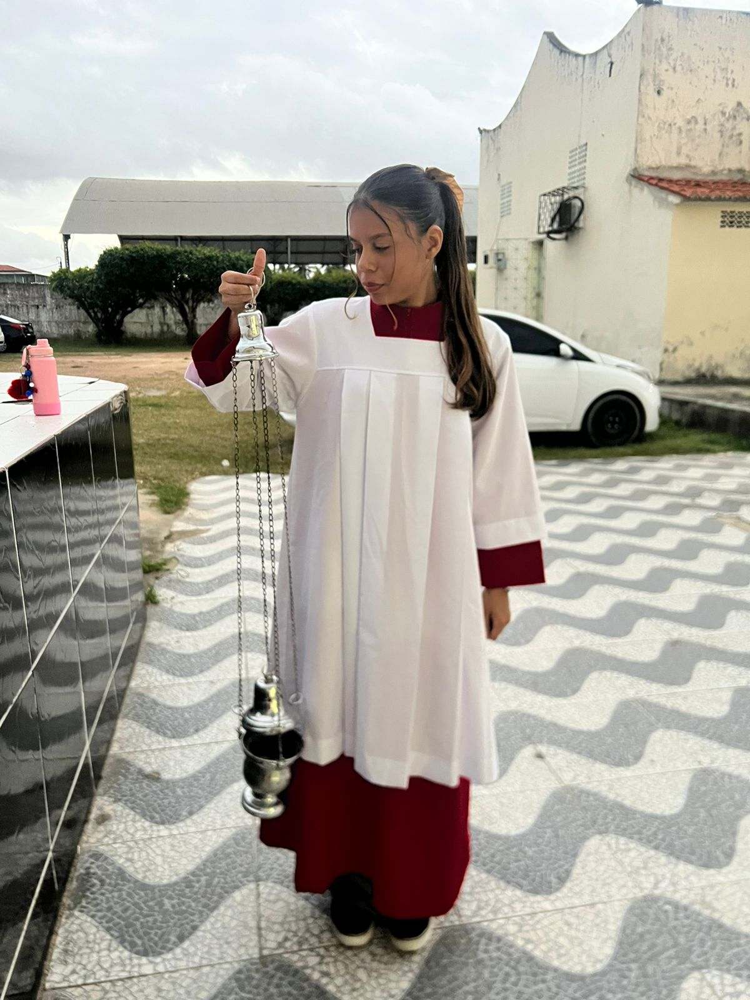
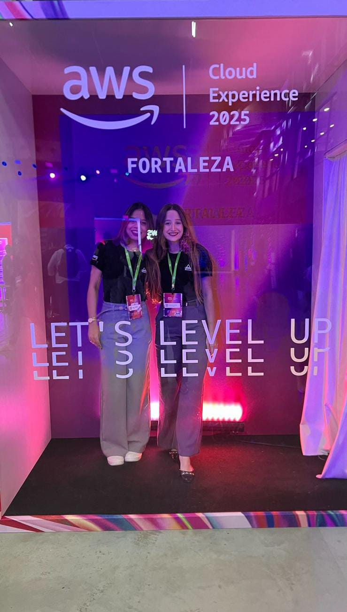

Para minha amada,
Meu amor, por meio desse pequeno site inspirado a você, venho falar algumas coisinhas no qual eu me arrependeria muito se eu não fizesse isso pra você.
Bom, para começar, eu nunca imaginei que naquele exato momento que eu cruzei os olhos com você, que nossas vidas se cruzaria, por incrível que pareça, em um evento de tecnologia, kkk.
Mas agradeço muito a Deus e Nossa Senhora por terem cruzado meu caminho com você. Eu sei que eu demorei muito pra poder falar com você, até porque eu achava que eu nunca ia ter chance com você.
Eu fico pensando em que Deus nunca cruza os caminhos de duas pessoas à toa se Ele não vê um propósito. Eu pedi muito pra Ele, que Ele pudesse me ajudar a escrever essa carta virtual.
Quando eu respondi seus stories a primeira vez e você me respondeu, meu coração bateu muito forte porque aquela menina linda que eu vi no evento, que eu acreditava que eu nunca teria chance, ia falar comigo, kkkk.
(OBS: Antes que eu me esqueça, eu não quero forçar nada, meu amor, com isso, mas é uma forma que eu encontrei de me expressar, e é uma coisa que eu nunca fiz pra ninguém. Espero que você goste 😊)
Mas enfim, desde o momento em que eu fui falar com você lá no evento, pra você apresentar a empresa, desde ali eu não sei se era impressão minha, mas eu senti uma pequena conexão de olhares.
É que nem aquela música do Jorge e Mateus: “Seu olhar foi de encontro ao meu, e o meu destino está junto ao seu”. Desde ali eu não tirei mais você da minha cabeça.
Aí começamos a conversar, e essas conversas que a gente teve, parecia que a gente já se conhecia há muito tempo.
Eu, em pouco tempo em que a gente conversa, pude entender um pouco sobre você, meu amor, e eu pude demonstrar o que eu queria pra você.
Eu peço desculpa se eu fui muito rápido, mas é como eu sempre falo: desde o começo, eu, infelizmente, sou muito intenso, e estou tentando controlar isso, kkk.
Eu sou uma pessoa muito difícil de escrever, mas eu não aguentava mais não falar, kkkkkk.
Todos os dias, nesse processo de consagração, eu sempre rezo e coloco você nas minhas orações, e eu vou ficar muito feliz de verdade em ver você lá, meu amor, no final da consagração.
Desde aquele texto que você me mandou, eu sempre coloco você nas minhas orações, na verdade, desde que você chegou na minha vida.
Só que eu penso muito em um versículo: 1 Coríntios 13:7. "O amor é paciente, é bondoso. Não inveja, não se vangloria, não se orgulha. Não maltrata, não procura seus interesses, não se ira facilmente, não guarda rancor. O amor não se alegra com a injustiça, mas se alegra com a verdade. Tudo sofre, tudo crê, tudo espera, tudo suporta."
Desde que você chegou, meu amor, eu senti que era você.
Provavelmente estou fazendo que nem meu pai: estou correndo atrás da mulher da minha vida, e é como eu falei pra você, meu amor, eu senti que eu devo esperar você.
Eu não consigo ter um sentimento só de paixão por você, mas eu sei que o que eu sinto é algo muito à frente, como casamento, família, filhos, ensinar eles a como ser pessoas boas e poder levá-los para a igreja e ensinar a catequese.
Meu sonho é esse, e ver e esperar você lá em cima do altar, com o Josileudo do lado, kakak.
Mas, por favor, meu amor, não se sinta sufocada com isso. Isso foi a forma que eu pude demonstrar uma parte do que eu sinto por você.
Agradeço todos os dias ao meu pai e minha mãezinha do céu, que cuida da gente. Agradeço muito por eles terem me dado a oportunidade de encontrar você, meu amor.
EU TE AMO, TÁ?
Espero que você tenha gostado.
.
 


